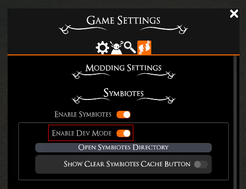
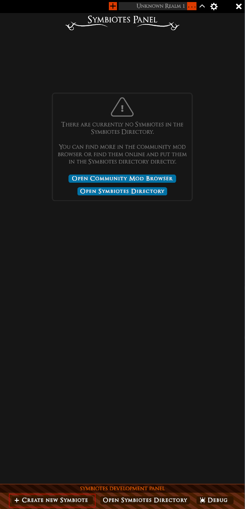

Symbiotes Documentation
-
Alpha Disclaimer
-
Getting Started
-
Manifest Docs
-
API Docs
-
Extras
-
FAQ
-
Upgrade Guides
Alpha Disclaimer
This is not a feature complete release and anything and everything documented here may change during the alpha period of Symbiotes without guarantee of backwards compatibility. We don't expect any fundamental changes, but will reserve the option for breaking changes if we see the need for it. Once the alpha period is over we will provide guides for updating to newer versions and there will be a system for deprecating old versions with plenty of time to update, though depending on changing internal features the exact behavior of certain functions may change.
Throughout the documentation there are notes styled like this one indicating sections where we specifically want feedback. Of course we also welcome feedback elsewhere, but the marked ones are particularly important. If you have suggestions for new features or feedback on existing ones, please let us know what you tried to do that isn't possible currently. This of course also applies to feedback about the documentation itself. To submit feedback go to
our feedback portal. The linked board is specifically for feedback about the API & developer experience, for user facing issues (UI bugs, performance issues, feature requests, ...) go to the "feature-requests" or "bug-reports" board.
Getting Started
To understand how web view based Symbiotes work and create your own, check out the examples provided on our GitHub repository.
The very first step is to activate the feature in the settings: 
If you just want to use other people's Symbiotes you're now done and can install them into the Symbiotes directory by simply dragging their folder there.
If you want to make your own Symbiotes, you need to create a manifest that describes the Symbiote you want to make. For some Symbiotes this may be sufficient, but for most, you will also need to create an HTML file to be loaded.
Additionally, we provide templated creation within TaleSpire to set up a mostly blank Symbiote for you to work with. To use it, enable the development mode and then press "Create new Symbiote" in the bottom of the Symbiotes panel:


If you need additional help after reading through the documentation, check out the #talespire-modding channel on our Discord.
Installing a Symbiote
To install a Symbiote, open the Symbiote directory located at %AppData%\..\LocalLow\BouncyRock Entertainment\TaleSpire\Symbiotes\. Instead of navigating there manually you can click the "Open Symbiotes Directory" button in either the Symbiote page in the game settings or the Symbiote panel itself. Simply add a folder in there for each Symbiote and as soon as the file "manifest.json" is added to that folder TaleSpire will try to load it. All folder and Symbiote creation and editing is detected live by TaleSpire and will cause an automatic reload on changes meaning TaleSpire does not need to be restarted for any of this.
On Linux the Windows folder structure is replicated by Proton (by default) next to the install folder. On the default Steam library folder it is located at ~/.steam/steam/steamapps/compatdata/720620/pfx/drive_c/ with the rest of the Windows folder structure being in there. If you have installed TaleSpire to another library location the compatdata folder will be in there.
Development Workflow
While you can develop the basic structure of your Symbiote in any external browser, features that rely on data or interactions with TaleSpire cannot be tested outside of TaleSpire. When loading a Symbiote in TaleSpire you can connect to it with an external browser by loading localhost:8080. For this to work you must first enable Symbiotes debugging in the TaleSpire settings:
The embedded browser is Chromium-based, so you can target that as your platform if you want to just support your project running as a Symbiote in TaleSpire.
Any changes you make to files within the Symbiote directory (excluding files/folders starting with a period: '.') will cause the Symbiote to automatically reload. This means you can have the code open in your favorite IDE and and have the Symbiote reload with each saved change.
Manifest Docs
The list links to the various manifest versions. Note that while deprecated versions are still supported for now, we are phasing them out and you should update your existing Symbiotes to a newer version and not create new ones with those versions.
Manifest Parser
When a manifest (= any file called manifest.json) gets parsed it can either succeed, which adds the Symbiote to the list of all others, or it can fail due to various reasons. If parsing the manifest fails, the Symbiote will still be shown in the list, but opening it doesn't load the Symbiote, instead it loads an error page. Parsing can fail for a number of obvious reasons: Incorrect manifest version, required fields being missing, the JSON being corrupted and not parseable, etc.
Additionally to all the ways a manifest could contain invalid data, parsing also fails if two installed Symbiotes have the same interop ID. This is true for both Symbiotes, not just one of them.
API Docs
The list links to the various API versions. Note that while deprecated versions are still supported for now, we are phasing them out and you should update your existing Symbiotes to a newer version and not create new ones with those versions. API updates that are exclusively additional (eg: a completely new API call) will not bump the version number, this will only be done on changes that potentially change the behavior of existing calls to be able to retain compatibility.
API reverse domain name
By default the API functions are accessible under the TS object, which is an alias for com.bouncyrock.talespire. It may be that this short alias has name conflicts on an existing webpage not made with TaleSpire/Symbiotes in mind, which is why it can be disabled in the manifest. All functions can be accessed by calling com.bouncyrock.talespire.functionKind.theFunctionYouWantToCall instead.
Rate limiting
We reserve the right to block any API call if the Symbiote has sent too many in short succession to preserve performance for TaleSpire. Any blocked calls will return the rateLimited error.
Permissions
The API only allows access to information that is accessible through the game normally. This means for example that a Symbiote running on a player's client will only be able to query stats for a mini controlled by them, not for other minis. Similarly a slab cannot be put into the hand of a player, as they don't have permissions to build. There is a distinction between users who can be a GM (= they have permission to be GM) and users who currently are a GM. Most calls that require a certain permission need the user (= player) to be able to switch to GM mode (canGM is set to true), while they don't care about which mode the client is currently in.
Not all calls have their permissions fully set up during the Symbiotes Alpha.
Injection
Everything that TaleSpire is told to inject by the manifest is concatenated into one file and then injected at once. This guarantees the order of injection to be stable and dependable. The API is always the first in the file, meaning all other injections specified in the extras array can depend on the API already existing (though it may not be done initializing yet!).
Everything in the extras array is injected in order of the occurrence in the array. The order should not matter for most cases, but for example if a .js injection edits one of the built-in extras like eg: Dice Finder, it needs to be injected after Dice Finder.
Scripts loaded by the HTML file itself are loaded according to normal browser behavior which can be before DOMContentLoaded and before API injection. Deferring or setting an event listener for onLoad can be used to ensure they are loaded at the appropriate time. The hasInitialized event is fired as soon as the API has finished loading and the communication between TaleSpire and the embedded browser is running.
The entire injection procedure is repeated for every page load. This includes the user navigating away from the entry point by clicking a link or a programmatic page switch using eg: window.open. Because of this it is often best to create Symbiotes as one-pagers that switch out content programmatically if necessary instead of navigating to other pages.
Symbiote lifetime
Symbiote Detection
TaleSpire scans the top-level directories under %AppData%\..\LocalLow\BouncyRock Entertainment\TaleSpire\Symbiotes\ looking for directories containing a manifest.json file. The manifest is then read, and the Symbiote is validated. The Symbiote is then available in the symbiotes panel. If the validation fails, then the entry in the panel will have a little warning marker indicating that fact. TaleSpire continues watching the Symbiotes directory for newly added or removed Symbiotes.
Starting Symbiote
When a Symbiote starts, TaleSpire loads the entryPoint specified in the manifest. By default, any additional code injection (such as for the TaleSpire API) begins once the DOMContentLoaded event is emitted by the embedded browser, guaranteeing the hasInitialized event triggers only once the entire DOM is available. If this is unimportant to you, you can override this by setting the initializeEarly option to true in the manifest. Note that initializeEarly doesn't guarantee the hasInitialized event to trigger before DOMContentLoaded; it just makes it possible that it can happen depending on timing.
In-use lifetime
If your Symbiote is focused and the Symbiotes panel is closed, your Symbiote will be delivered an event via the onVisibilityEvent event source.
If your Symbiote was focused, but then a different Symbiote becomes the focus, the behavior depends on the capabilities of your Symbiote. If the runInBackground capability is specified, then the Symbiote will be informed that it willEnterBackground, and the Symbiote will continue running. If the runInBackground capability is not specified, then the Symbiote is shut down until it becomes focused again. We recommend not using the runInBackground capability whenever possible, as it allows TaleSpire to free up resources for the player. Instead, we prefer saving to Symbiote storage after all notable data changes and reloading them on Symbiote startup.
Symbiotes survive board switches, but some API calls won't work during the switch. For example, TS.players.getPlayersInThisBoard doesn't make sense if the Symbiote is not in a board. This should only take a short time but should be handled by the Symbiote by listening for client leave/join events for your own client and suppressing API calls.
If dev-mode is enabled, TaleSpire watches the symbiote directory for changes and will live-reload the Symbiote when modified. The folders are watched for file changes to see updates to files and detect new Symbiotes being added (or existing ones removed). Note the exceptions to file watching mentioned in Development Workflow.
Shutdown Symbiote
On shutdown of a Symbiote, we attempt to deliver the willShutdown event from the event source onStateChangeEvent. This can give the Symbiote a short time to do any last-minute cleanup you want to do before the Symbiote is shut down. However, delivery of the shutdown event is made on a "best effort" and is not guaranteed. Therefore don't leave important tasks for this event. We reserve the right to shut down any Symbiote without event/warning for reasons such as performance or stability.
While all of the features of the API are documented above, there are some other miscellaneous extras we provide to make creating your own Symbiotes more convenient and make them look more at home in TaleSpire. They can be added by adding their respective name to the "extras" list in the manifest.
TS Theme
If the string colorStyles is added to extras, TaleSpire injects a number of CSS variables defining the TaleSpire color scheme, which we highly recommend if you're trying to create a Symbiote that is supposed to fit in with the rest of the UI. This provides easy access to the exact colors TaleSpire's UI uses and they'll be updated with TaleSpire to keep your Symbiote fitting in at no extra work for you. This also allows users to change the UI theme to for example switch to a high contrast theme and have all the Symbiotes adapt to that.
The color descriptions provide info which colors should be used together - you can of course mix and match them in other ways, but please always check any combination with your favorite contrast checker tool. You should aim for a contrast of at least 4.5, though 7 or more is preferable as it helps with legibility, especially for visually impaired people. We don't always achieve this ourselves, but we'll try our best to improve on that front.
While you can use colors in "any way you want", do not completely misuse a color against its name or description, like using a background color in the foreground. Even if it might look fine now, if we update the color palette it may lead to bad looking or even unreadable Symbiotes. If there is a color missing for what you want to do it is better to create your own color than to "misuse" an existing theme color for something it is not intended for.
We want to have as few variables as possible, but the goal is that the entirety of a Symbiote's color palette is defined by these colors (if they are intending to replicate TaleSpire's theme that is), without
any manually defined color codes. We are happy to receive
feedback about in which situations there may be a color missing.
-
--ts-color-primary: The primary color for elements like text. Provides high contrast to --ts-background-primary
-
--ts-color-secondary: The secondary color for elements like text. Less contrast than the primary color and can be used for disabled elements or less prominent text like descriptions or captions.
-
--ts-background-primary: The primary color for the background. Provides high contrast to --ts-color-primary.
-
--ts-background-secondary: The secondary color for the background. Can be used for example for cards that should be visually distinct from the normal background, for alternating color on long lists or tables or for low contrast borders. If visual distinction is essential to be able to use the UI comfortably, consider giving any elements that use this background color on top of --ts-background-primary a border with color --ts-accessibility-border because the secondary and primary background colors don't provide good contrast with each other.
-
--ts-background-tertiary: The primary color for the background. Even less contrast with --ts-color-primary than the other two background colors. Used for similar cases as --ts-background-secondary, as well as button backgrounds, but care should be put into contrast in conjunction with --ts-color-secondary. For button backgrounds, see also --ts-button-background.
-
--ts-accessibility-border: Defines the border color for the high contrast theme for better accessibility. Is transparent (= invisible) in the default theme, but should be used on input elements to create a more accessible experience when needed. When a border is desired in the normal theme use other colors, but to not impede the usefulness of the high contrast theme, consider using one of the foreground colors as border for input elements to provide a high contrast and only using a background colors as border for non-interactive elements (eg: table borders).
-
--ts-accessibility-focus: Defines a focus color for the high contrast theme for better accessibility. This allows keyboard navigation in Symbiotes by providing a visible highlight around the currently focused element. Is transparent (= invisible) in the default theme, but should be set for all focusable elements (usually input elements). Focus should be set using the "outline" css property. See examples for guidance.
-
--ts-color-danger: An accent color for depicting something potentially dangerous like deleting/clearing data or similar.
-
--ts-accent-primary: The primary TaleSpire accent color. Can be used for background, text and accents like borders. Be mindful of using it (and the accompanying --ts-accent-hover) as background color, because it doesn't provide great contrast with --ts-color-primary.
-
--ts-accent-hover: An on hover color for --ts-accent-primary. Used wherever there should be a highlight on mouse hover (or similar actions) and --ts-accent-primary is used. Similar considerations regarding contrast as with --ts-accent-primary.
-
--ts-accent-background: A variant of the accent color to serve better as a background. Can be used for example as background color for an element that already has the primary accent color as border. Provides more contrast to --ts-color-primary when used in the background than --ts-accent-primary.
-
--ts-button-background: The default button background color. Should be used for most buttons, but to provide contrast between important and less important actions in the UI, --ts-background-tertiary can be used for those lower priority elements instead. Does not provide good contrast to --ts-color-secondary.
-
--ts-button-hover: An on hover color for --ts-button-background. Used wherever there should be a highlight on mouse hover (or similar actions) and --ts-button-background is used. Similar considerations regarding contrast as with --ts-button-background
-
--ts-link: Text color for hyperlinks.
-
--ts-link-hover: An on hover color for --ts-link. Used wherever there should be a highlight on mouse hover (or similar actions) and --ts-link is used.
TS Fonts
If the string fonts is added to extras, TaleSpire injects the TaleSpire fonts to be used in CSS. Available fonts:
- Optimus Princeps:
font-family: OptimusPrinceps;
This is an example text with the font
TS Icons
If the string icons is added to extras, TaleSpire injects CSS classes for each UI icon and some control classes to adjust sizing and behavior.
An icon can be inserted by providing an icon element and adding the respective class for the icon you want:
<i class="ts-icon-sword-crossed"></i>
Additionally, the sizing of the icon can be set to one of the following by inserting their respective classes:
ts-icon-xsmall: 16pxts-icon-small: 24pxts-icon-medium: 32px - if no size is specified, it will default to this sizets-icon-large: 64pxts-icon-xlarge: 128px
and a black border can be added by providing ts-icon-border. Keep in mind, that the icons are usually pure white, so without a border they will be invisible on a white background.
An icon using all of these would look like this:
<i class="ts-icon-book ts-icon-small ts-icon-border"></i>
It's possible to invert the icon colors to have black icons (with white borders) by adding the ts-icon-black class.
See here for a list of icons: Available Icons
Dice Finder
If the string diceFinder is added to extras, the dice finder functionality will be added to the Symbiote that's being loaded. The dice finder can identify whether text under the mouse cursor looks like a dice roll that TaleSpire can understand. This is meant to work robustly on as many websites as possible, but due to the vast amount of websites and different approaches it may not work on some. For it to work, it also needs to have the API injected.
We have tested the dice finder on a number of different websites to see if it behaves correctly, but it's likely that some websites have a different setup and as such the dice finder may break on them. If you encounter any problems with dice finder, please
let us know which website is being problematic so we can investigate it.
FAQ
No Q's have been A-ed yet.
Upgrade Guides
There are no versions to upgrade to or from yet.